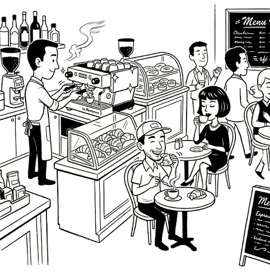

<!DOCTYPE html>
<html lang="en">
<head>
<meta charset="UTF-8">
<title>Cafe Footer — Animation Test</title>
<style>
  body { margin: 0; background: #f0ece0; display: flex; align-items: center; justify-content: center; min-height: 100vh; }

  .cafe-footer {
    position: relative;
    display: inline-block;
    line-height: 0;
  }

  .cafe-footer img {
    display: block;
    width: 100%;
    max-width: 800px;
    height: auto;
  }

  /* Overlay canvas sits exactly on top of the image */
  .overlay {
    position: absolute;
    top: 0; left: 0;
    width: 100%; height: 100%;
    pointer-events: none;
  }

  /* ── STEAM ── */
  .steam-wisp {
    position: absolute;
    width: 3px;
    border-radius: 2px;
    background: linear-gradient(to top, rgba(60,60,60,0.5), transparent);
    transform-origin: bottom center;
    animation: steamRise 2.5s ease-in infinite;
  }
  @keyframes steamRise {
    0%   { transform: translateY(0)    scaleX(1)   rotate(0deg);   opacity: 0.7; }
    30%  { transform: translateY(-18%) scaleX(1.6) rotate(-4deg);  opacity: 0.5; }
    65%  { transform: translateY(-34%) scaleX(0.9) rotate(5deg);   opacity: 0.25; }
    100% { transform: translateY(-50%) scaleX(1.3) rotate(-2deg);  opacity: 0; }
  }

  /* Machine steam — positioned as % of container so it scales */
  /* Adjust left/bottom % values in Round 2 */
  .machine-steam-1 { left: 34%;  bottom: 80%; height: 7%; animation-delay: 0s; }
  .machine-steam-2 { left: 36%;  bottom: 80%; height: 9%; animation-delay: 0.8s; }
  .machine-steam-3 { left: 38%;  bottom: 80%; height: 6%; animation-delay: 1.6s; }

  /* Cup steam on table */
  .cup-steam-1 { left: 63%; bottom: 52%; height: 5%; animation-delay: 0.3s; }
  .cup-steam-2 { left: 64.5%; bottom: 52%; height: 4%; animation-delay: 1.1s; }

  /* ── ARMS (JS-animated via CSS custom props) ── */
  .arm {
    position: absolute;
    background: white;
    border: 2.5px solid #111;
    border-radius: 8px;
    transform-origin: left center;
  }

  /* Barista right arm */
  .barista-arm {
    left: 29%; top: 50%;
    width: 9%; height: 2.2%;
    animation: pullArm 2.2s ease-in-out infinite;
    transform-origin: left center;
  }
  @keyframes pullArm {
    0%, 100% { transform: rotate(-10deg); }
    50%       { transform: rotate(18deg); }
  }

  /* Man sipping arm */
  .man-arm {
    left: 49%; top: 67%;
    width: 8%; height: 2%;
    animation: sipArm 3.8s ease-in-out infinite;
    transform-origin: left center;
  }
  @keyframes sipArm {
    0%, 60%, 100% { transform: rotate(-15deg); }
    35%            { transform: rotate(-50deg); }
  }

  /* Staff wave arm */
  .staff-arm {
    left: 75%; top: 44%;
    width: 6%; height: 1.8%;
    animation: waveArm 2s ease-in-out infinite;
    transform-origin: left center;
  }
  @keyframes waveArm {
    0%, 100% { transform: rotate(-30deg); }
    50%       { transform: rotate(15deg); }
  }

  /* ── BLINK overlays (white rect that covers eye, scaleY collapses it) ── */
  .eye-cover {
    position: absolute;
    background: white;
    border-radius: 1px;
    animation: blink 4s ease-in-out infinite;
    transform-origin: center;
  }
  @keyframes blink {
    0%, 87%, 100% { transform: scaleY(0); }   /* eye open = cover hidden */
    92%            { transform: scaleY(1); }   /* eye closed = cover shown */
  }

  /* Barista eyes — adjust left/top/width/height in Round 2 */
  .eye-b-l { left: 22.5%; top: 27.5%; width: 1.8%; height: 1.5%; animation-delay: 0s; }
  .eye-b-r { left: 25%;   top: 27.5%; width: 1.8%; height: 1.5%; animation-delay: 0s; }

  /* Man eyes */
  .eye-m-l { left: 49%;   top: 38%;   width: 1.8%; height: 1.5%; animation-delay: 1.4s; }
  .eye-m-r { left: 51.5%; top: 38%;   width: 1.8%; height: 1.5%; animation-delay: 1.4s; }

  /* Woman eyes */
  .eye-w-l { left: 63%;   top: 35%;   width: 1.6%; height: 1.3%; animation-delay: 2.8s; }
  .eye-w-r { left: 65%;   top: 35%;   width: 1.6%; height: 1.3%; animation-delay: 2.8s; }

  /* ── DEV GRID (comment out for production) ── */
  .dev-grid {
    position: absolute;
    top: 0; left: 0; width: 100%; height: 100%;
    pointer-events: none;
    background-image:
      linear-gradient(rgba(255,0,0,0.08) 1px, transparent 1px),
      linear-gradient(90deg, rgba(255,0,0,0.08) 1px, transparent 1px);
    background-size: 10% 10%;
  }
  /* Uncomment to show grid: */
  /* .dev-grid { display: block; } */

</style>
</head>
<body>

<div class="cafe-footer">
  

  <div class="overlay">

    <!-- Dev grid for calibration — uncomment style above to show -->
    <div class="dev-grid"></div>

    <!-- Machine steam -->
    <div class="steam-wisp machine-steam-1"></div>
    <div class="steam-wisp machine-steam-2"></div>
    <div class="steam-wisp machine-steam-3"></div>

    <!-- Cup steam -->
    <div class="steam-wisp cup-steam-1"></div>
    <div class="steam-wisp cup-steam-2"></div>

    <!-- Arms -->
    <div class="arm barista-arm"></div>
    <div class="arm man-arm"></div>
    <div class="arm staff-arm"></div>

    <!-- Eye blink covers -->
    <div class="eye-cover eye-b-l"></div>
    <div class="eye-cover eye-b-r"></div>
    <div class="eye-cover eye-m-l"></div>
    <div class="eye-cover eye-m-r"></div>
    <div class="eye-cover eye-w-l"></div>
    <div class="eye-cover eye-w-r"></div>

  </div>
</div>

</body>
</html>
